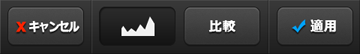

ヒストグラム(Histogram)
 ヒストグラム(Histogram)–高級機能 : ヒストグラム(Histogram)を使うと写真の露出を細かく調節することができます。
ヒストグラム(Histogram)–高級機能 : ヒストグラム(Histogram)を使うと写真の露出を細かく調節することができます。


①ヒストグラムグラフ(Histogram Graph)は写真の露出分布を表します。グラフの左側が暗所の比率を、グラフの右側が明るい所の比率を表します。
グラフが全体的に均一にされればされるほど適度の露出効果が適用された写真とも言えます。

②自動調節(Auto)ボタンを押下するとグラフに基づいた適正の露出度に自動に調整されます。
③左側ボタン(Black)を動かすと暗所を、④右側ボタン(White)を動かすと明るい所の露出を調節でき、
⑤真ん中ボタン(Mid-tone)は２つのボタンの間の比率を表すため、２つのボタンの動きによって自動に位置が変わってしまいます。
真ん中のボタンを直接動かし、真ん中の色合いの比率を調節することができます。